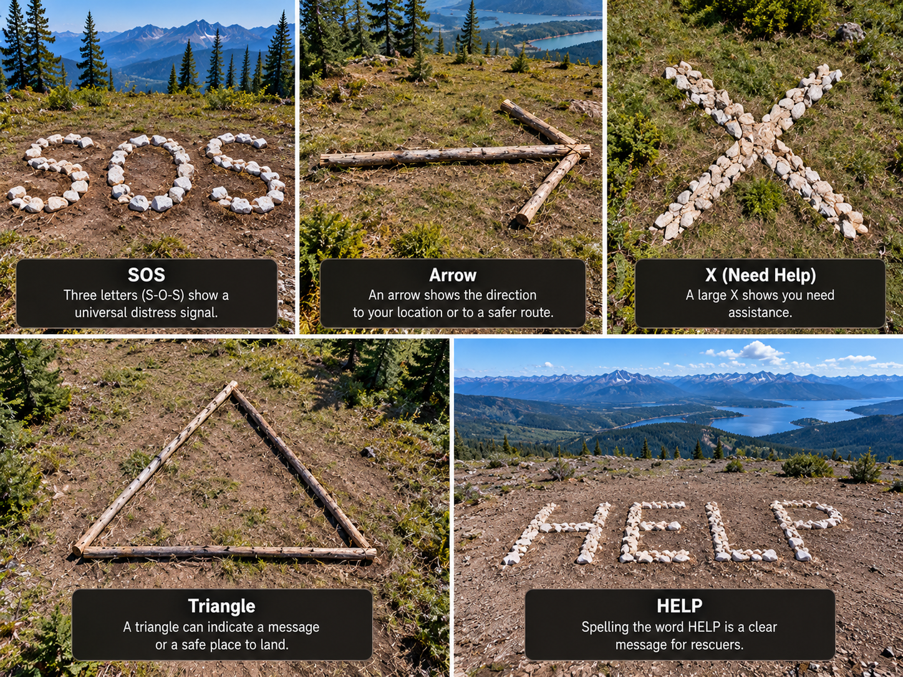

Ground Signals

Large visible ground markings can help make a location easier to notice from a distance.
What It Is
A ground signal is a large marking created in an open area using materials that contrast with the surrounding ground.
When to Use It
Ground signals may be useful when trying to make your location more visible to rescuers from a distance.
How It Works
Materials can be arranged into a large, simple shape in a clear area. The signal should be large enough to stand out from the surrounding landscape.
Materials Needed
- Rocks
- Branches
- Bright clothing or material
- Open visible area
Source
General emergency preparedness information: American Red Cross - Survival Skills